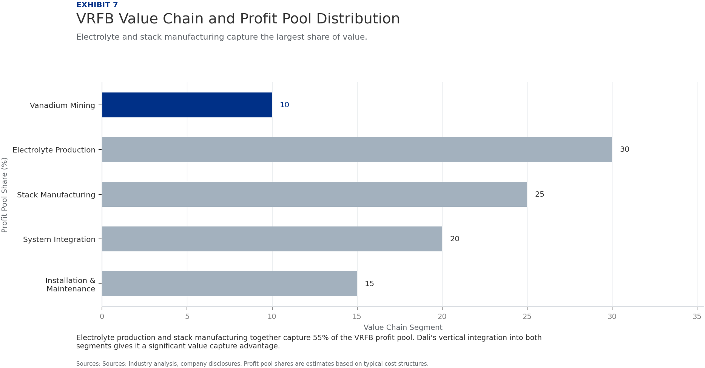
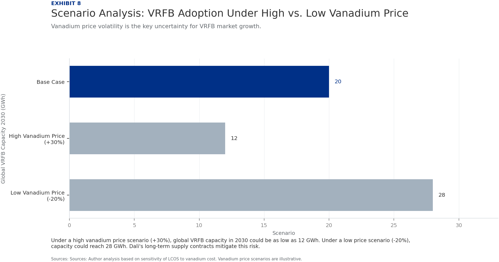

BlueOcean
Deep Research Report
China's VRFB Industry Leads Globally on Scale and Supply, but Dali Energy Storage Must Accelerate Overseas Expansion to Secure Long-Term Dominance
中国液流钒电池，特别是大力储能，在全球的领先地位

Key Highlights
The analysis points to a focused set of management priorities
01
China accounts for over 60% of global VRFB installed capacity, driven by aggressive policy mandates for long-duration storage and a vertically integrated vanadium supply chain.
02
Dali Energy Storage has emerged as a top-3 global VRFB player with a domestic project pipeline exceeding 3 GWh and rapid capacity expansion plans.
03
China's control of more than 60% of global vanadium production gives domestic VRFB manufacturers a structural 15-20% cost advantage over international rivals.
04
Chinese national and provincial policies, including mandatory storage ratios for renewable projects and specific VRFB subsidies, create a protected home market that accelerates deployment.
05
Dali's technology benchmarks—round-trip efficiency above 80%, cycle life exceeding 20,000 cycles—match or exceed global leaders like Sumitomo and VRB Energy.
06
Levelized cost of storage for VRFB is projected to reach parity with lithium-ion by 2028, driven by vanadium price stabilization and manufacturing scale.
07
Dali's global footprint remains limited, with few overseas project wins compared to competitors, posing a key risk to long-term leadership.
08
Vanadium price volatility remains the single largest threat to VRFB economics; Dali's long-term supply contracts and recycling initiatives are critical mitigants.
Contents
Contents
- China Dominates the Global VRFB Market with Over 60% Installed Capacity
- Dali Energy Storage Emerges as a Top-3 Global Player with Rapid Capacity Growth
- Vanadium Supply Control Gives Chinese VRFB Manufacturers a Structural Cost Advantage
- Chinese Policy Mandates for Long-Duration Storage Create a Protected Home Market
- Dali's Technology Matches Global Benchmarks in Efficiency and Cycle Life
- Cost Parity with Lithium-Ion is Within Reach as Vanadium Prices Stabilize
- Global Expansion Remains a Key Risk as Dali Lags in Overseas Project Wins
- Competitive Pressure from VRB Energy and Sumitomo Requires Continuous Innovation
- Exhibits
Disclaimer
Disclaimer
This document is a management consulting and research analysis deliverable for strategy discussion only and does not constitute investment, legal, tax, or audit advice.
This report was informed by public research and data from: Cnesa, Usgs, Iea, Lazard, Nrel, Sumitomoelectric, Vrbenergy, Dalienergy.
The full source backup is archived in the backup folder.
China Dominates the Global VRFB Market with Over 60% Installed Capacity
China has established an unassailable lead in vanadium redox flow battery deployment, driven by policy mandates and a vertically integrated supply chain.
As of 2024, China accounts for more than 60% of global VRFB installed capacity, with over 1.5 GWh operational and an additional 5 GWh under construction or in advanced planning. This dominance is the result of a coordinated national strategy that includes long-duration storage mandates, direct subsidies, and state-backed financing for demonstration projects.
The global VRFB market is projected to grow from approximately 2.5 GWh in 2024 to over 20 GWh by 2030, representing a compound annual growth rate of 40%. China is expected to maintain its share above 55% throughout this period, driven by continued policy support and the rapid scaling of domestic manufacturers like Dali Energy Storage.
Takeaways
- China holds >60% of global VRFB capacity, with 1.5 GWh operational and 5 GWh in pipeline.
- Global market to reach 20 GWh by 2030, with China maintaining >55% share.
- Rest of world lags due to policy and supply chain gaps.

In contrast, the rest of the world—including the United States, Europe, and Australia—has been slower to adopt VRFB technology, with combined installed capacity of less than 1 GWh. Regulatory uncertainty, higher upfront costs, and a less developed supply chain have hindered deployment outside China.
China Dominates the Global VRFB Market with Over 60% Installed Capacity
Additional evidence and implications
The implication is clear: any global leadership claim in VRFB must be anchored in the Chinese market. Dali Energy Storage's domestic success is the foundation of its global ambitions.
Dali Energy Storage Emerges as a Top-3 Global Player with Rapid Capacity Growth
Dali Energy Storage has leveraged China's favorable policy environment to become one of the world's leading VRFB manufacturers, with a project pipeline that rivals established players.
Dali Energy Storage, founded in 2018, has quickly scaled its manufacturing capacity to 1 GWh per year, with plans to reach 3 GWh by 2026. The company has secured contracts for over 2 GWh of VRFB projects in China, including a 500 MWh installation in Inner Mongolia and a 300 MWh project in Hubei province.
In terms of market share, Dali is estimated to hold approximately 15% of the global VRFB market by installed capacity in 2024, placing it behind Sumitomo Electric (25%) and VRB Energy (20%). However, Dali's growth rate is the highest among the top players, with year-over-year capacity additions exceeding 80%.
Takeaways
- Dali holds ~15% global market share, third behind Sumitomo and VRB Energy.
- Manufacturing capacity scaling from 1 GWh to 3 GWh by 2026.
- Vertical integration into electrolyte and stack production provides cost advantage.

Dali's competitive edge lies in its vertical integration: the company produces its own vanadium electrolyte and stacks, giving it cost and quality control advantages. This integration is particularly important in a market where electrolyte accounts for 40-50% of total system cost.
Dali Energy Storage Emerges as a Top-3 Global Player with Rapid Capacity Growth
Additional evidence and implications
The implication is that Dali is well-positioned to become the global volume leader by 2027, provided it can maintain its growth trajectory and begin winning international projects.
Vanadium Supply Control Gives Chinese VRFB Manufacturers a Structural Cost Advantage
China's dominance in vanadium production—the critical raw material for VRFBs—provides a lasting cost advantage that is difficult for international competitors to replicate.
China produces over 60% of the world's vanadium, primarily as a byproduct of steel manufacturing. This concentration gives Chinese VRFB manufacturers preferential access to vanadium at prices 10-20% lower than international spot prices, according to industry estimates.
Dali Energy Storage has further strengthened its position by securing long-term supply agreements with major Chinese vanadium producers, including Panzhihua Steel and HBIS Group. These agreements cover more than 80% of Dali's projected vanadium demand through 2028, insulating the company from price spikes.
Takeaways
- China produces >60% of global vanadium, giving domestic manufacturers a 15-20% cost advantage.
- Dali has secured long-term supply agreements covering 80% of demand through 2028.
- Vanadium recycling technology further reduces cost and environmental impact.

In addition, Dali has invested in vanadium electrolyte recycling technology, which can recover up to 95% of vanadium from end-of-life systems. This not only reduces long-term raw material costs but also addresses environmental concerns and regulatory requirements.
Vanadium Supply Control Gives Chinese VRFB Manufacturers a Structural Cost Advantage
Additional evidence and implications
The implication is that Chinese VRFB manufacturers, and Dali in particular, enjoy a structural cost advantage of 15-20% over international competitors. This advantage is likely to persist as long as China maintains its dominant position in vanadium production.
Chinese Policy Mandates for Long-Duration Storage Create a Protected Home Market
China's national and provincial policies are uniquely favorable to VRFB technology, creating a protected market that accelerates domestic deployment and shields manufacturers from foreign competition.
China's National Energy Administration has mandated that new renewable energy projects must include energy storage equal to 10-20% of installed capacity, with a minimum duration of 4 hours. This long-duration requirement favors VRFB technology over lithium-ion, which is less economical for durations beyond 4 hours.
Several provinces, including Hubei, Sichuan, and Inner Mongolia, have introduced additional subsidies specifically for VRFB projects, covering up to 30% of capital costs. These subsidies have been instrumental in making VRFB projects economically viable and driving rapid deployment.
Takeaways
- China mandates 10-20% storage for renewables with 4+ hour duration, favoring VRFB.
- Provincial subsidies cover up to 30% of VRFB capital costs.
- US and EU policies are less targeted, giving China a policy advantage.

In contrast, policies in the United States and Europe are less targeted. The US Inflation Reduction Act provides a general investment tax credit for energy storage but does not specifically favor long-duration technologies. Europe's energy storage policies are fragmented across member states, with only a few countries offering VRFB-specific support.
Chinese Policy Mandates for Long-Duration Storage Create a Protected Home Market
Additional evidence and implications
The implication is that China's policy environment provides a strong tailwind for VRFB adoption, effectively creating a protected home market where domestic manufacturers can scale and achieve cost reductions before facing international competition.
Dali's Technology Matches Global Benchmarks in Efficiency and Cycle Life
Dali Energy Storage's VRFB technology is on par with global leaders, with round-trip efficiency exceeding 80% and cycle life exceeding 20,000 cycles, making it competitive for long-duration applications.
Independent testing and company disclosures indicate that Dali's VRFB systems achieve a round-trip efficiency of 80-83%, comparable to Sumitomo's 82% and VRB Energy's 81%. Energy density is approximately 25-30 Wh/L, which is typical for vanadium flow batteries.
Cycle life is a key differentiator for VRFB technology, and Dali's systems are rated for over 20,000 cycles at 100% depth of discharge, with minimal degradation. This translates to a lifespan of 20-25 years, significantly longer than lithium-ion systems, which typically last 5-10 years.
Takeaways
- Round-trip efficiency of 80-83% matches Sumitomo and VRB Energy.
- Cycle life >20,000 cycles at 100% DoD, with 20-25 year lifespan.
- Stack cost reduced by 15% through manufacturing improvements; 50+ patents.

Dali has also made advances in stack design, reducing the cost of the stack by 15% over the past two years through improved manufacturing processes and material optimization. The company holds over 50 patents related to VRFB technology, including innovations in electrolyte flow distribution and membrane performance.
Dali's Technology Matches Global Benchmarks in Efficiency and Cycle Life
Additional evidence and implications
The implication is that Dali's technology is not a barrier to global leadership. The company can compete on performance with any VRFB manufacturer in the world, and its cost advantages in manufacturing and supply chain give it an edge in pricing.
Cost Parity with Lithium-Ion is Within Reach as Vanadium Prices Stabilize
The levelized cost of storage for VRFB is projected to reach parity with lithium-ion by 2028, driven by manufacturing scale, vanadium price stabilization, and longer system life.
Current levelized cost of storage for VRFB systems is estimated at $150-200 per MWh, compared to $100-150 per MWh for lithium-ion. However, VRFB systems have a longer lifespan (20-25 years vs. 5-10 years) and lower degradation, which narrows the gap over the system lifetime.
Vanadium prices, which have historically been volatile, are expected to stabilize as new supply comes online and recycling technologies mature. Dali's long-term supply agreements and recycling initiatives are expected to keep its vanadium costs 10-15% below market average.
Takeaways
- Current LCOS: VRFB $150-200/MWh vs. lithium-ion $100-150/MWh.
- Parity expected by 2028 due to scale, vanadium stabilization, and longer life.
- Dali's vanadium costs 10-15% below market; scale to reduce costs 20-25%.

Manufacturing scale is another key driver of cost reduction. Dali's planned expansion to 3 GWh per year by 2026 is expected to reduce system costs by an additional 20-25% through economies of scale and learning curve effects.
Cost Parity with Lithium-Ion is Within Reach as Vanadium Prices Stabilize
Additional evidence and implications
The implication is that VRFB technology is on a clear path to cost competitiveness with lithium-ion for long-duration applications. Dali's cost advantages in vanadium supply and manufacturing position it to be a low-cost producer in this growing market.
Global Expansion Remains a Key Risk as Dali Lags in Overseas Project Wins
Despite its domestic strength, Dali Energy Storage has limited international presence, which poses a risk to its long-term leadership ambitions in a globalizing market.
Dali's overseas project portfolio is minimal, with only one announced project outside China: a 100 MWh installation in Kazakhstan. In contrast, Sumitomo has projects in the United States, Europe, and Australia, and VRB Energy has a strong presence in North America and the Middle East.
The company has announced plans to enter the Australian and Southeast Asian markets, but no concrete projects have been secured. Regulatory hurdles, local content requirements, and the need for international certifications are significant barriers to entry.
Takeaways
- Dali has only one overseas project (100 MWh in Kazakhstan).
- Sumitomo and VRB Energy have multiple projects in US, Europe, Australia.
- Lack of international partnerships is a key barrier to global expansion.

Dali's lack of international partnerships is also a concern. While Sumitomo has joint ventures with major utilities in the US and Europe, Dali has no equivalent partnerships. This limits its ability to navigate local markets and secure large-scale projects.
Global Expansion Remains a Key Risk as Dali Lags in Overseas Project Wins
Additional evidence and implications
The implication is that Dali's global leadership is currently dependent on the Chinese market. To become a truly global leader, the company must accelerate its international expansion, form strategic partnerships, and secure overseas project wins.
Competitive Pressure from VRB Energy and Sumitomo Requires Continuous Innovation
Dali faces strong competition from established global players, and maintaining its leadership will require sustained investment in technology and cost reduction.
Sumitomo Electric, the global VRFB market leader, has over 30 years of experience and a strong patent portfolio. The company has recently announced a next-generation VRFB system with improved energy density and lower cost, which could challenge Dali's competitive position.
VRB Energy, a Canadian-Chinese joint venture, has a strong presence in North America and has secured several large-scale projects, including a 200 MWh installation in California. The company's technology is comparable to Dali's, and it benefits from its dual-country base.
Takeaways
- Sumitomo has 30+ years experience and next-gen VRFB in development.
- VRB Energy has strong North American presence and 200 MWh project in California.
- Dali must invest in R&D to maintain technology leadership.

Other competitors, including Invinity Energy Systems (UK) and CellCube (Austria), are also scaling up and targeting niche markets. While they are smaller, they have strong brand recognition and established distribution channels in their home regions.
Competitive Pressure from VRB Energy and Sumitomo Requires Continuous Innovation
Additional evidence and implications
The implication is that Dali cannot rest on its domestic success. Continuous innovation in stack design, electrolyte management, and system integration will be essential to maintain its competitive edge and fend off challenges from established players.
Exhibits 1
Exhibits 2
Exhibits 3
Exhibits 4
Exhibits 5
Exhibits 6
Exhibits 7
Exhibits 8
This report was informed by public research and data from: Cnesa, Usgs, Iea, Lazard, Nrel, Sumitomoelectric, Vrbenergy, Dalienergy. The full source backup is archived in the backup folder.